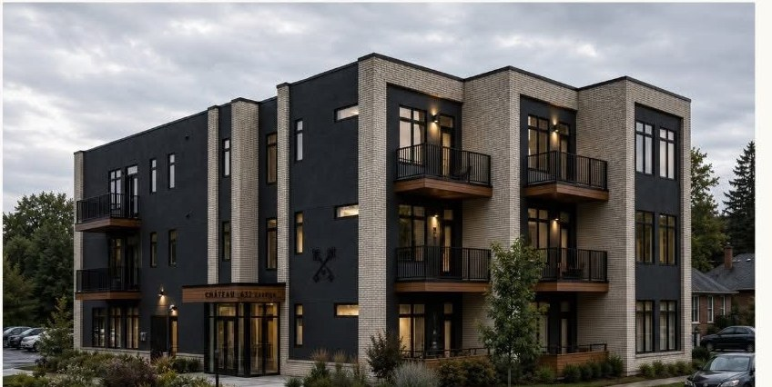
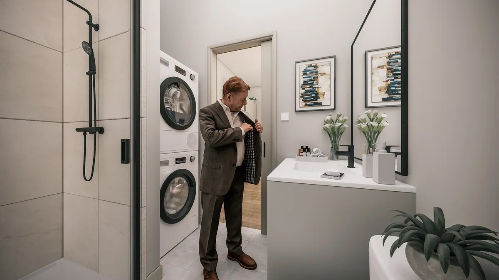
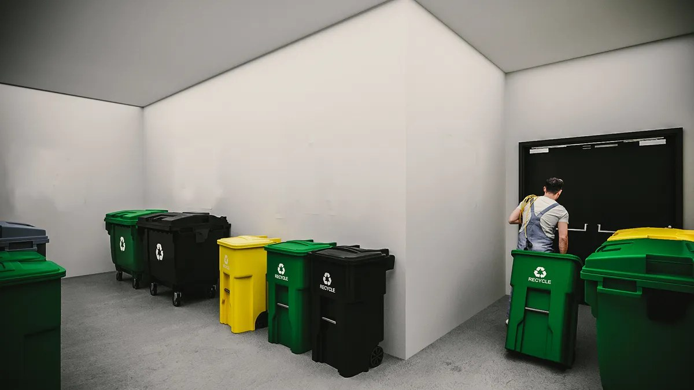

Photos — rendus conceptuels
Le Château 632 est tout neuf : ces images sont les rendus conceptuels générés par ordinateur publiés par le projet — ils donnent une idée générale des espaces finis. Images à titre d'illustration seulement; les détails, les finis et les dimensions peuvent varier. La suite modèle est ouverte — la meilleure façon de le voir, c'est en personne.
L'immeuble




À l'intérieur des logements





Styles alternatifs — imaginez-le à votre goût
Les mêmes pièces, des ambiances différentes : ces concepts de styles alternatifs accompagnent les curseurs de la page d'accueil. Les deux versions sont des visualisations de style, et non des photographies — les finis réels peuvent varier.


La vie dans l'immeuble



Toutes les images de cette page sont des rendus conceptuels publiés par le projet sur chateau632.ca (plus un rendu d'extérieur tiré de ses dépliants promotionnels) — ce ne sont pas des photographies de logements finis.